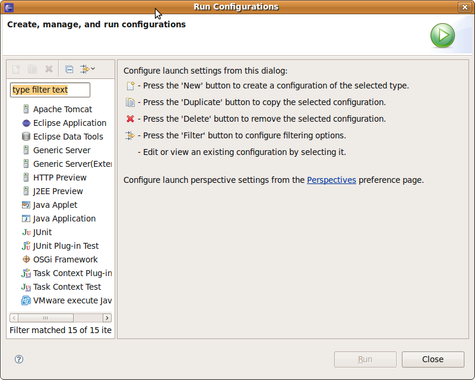
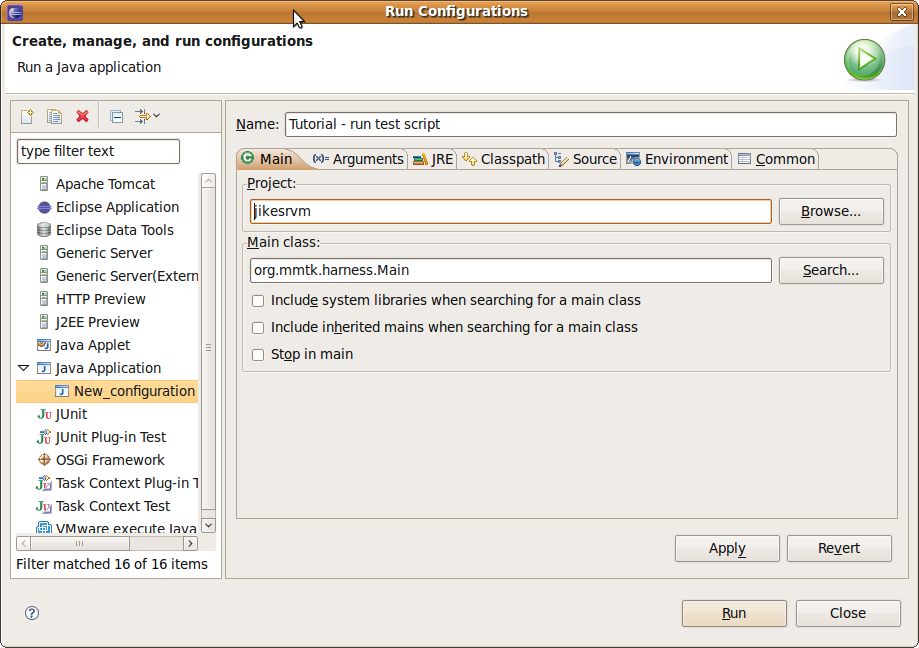

Overview
The MMTk harness is a debugging tool. It allows you to run MMTk with a simple client - a simple Java-like scripting language - which can explicitly allocate objects, create and delete references, etc. This allows MMTk to be run and debugged stand-alone, without the entire VM, greatly simplifying initial debugging and reducing the edit-debug turnaround time. This is all accessible through the command line or an IDE such as eclipse.
Running the test harness
The harness can be run standalone or via Eclipse (or other IDE).
Standalone
ant mmtk-harness java -jar target/mmtk/mmtk-harness.jar <script-file> [options...]
There is a collection of sample scripts in the MMTk/harness/test-scripts directory. There is a simple wrapper script that runs all the available scripts against all the collectors,
bin/test-mmtk [options...]
This script prints a PASS/FAIL line as it goes, and puts detailed output in results/mmtk.
In Eclipse
ant mmtk-harness-eclipse-project
Or in versions before 3.1.1
ant mmtk-harness && ant mmtk-harness-eclipse-project
Refresh the project (or import it into eclipse), and then run 'Project > Clean'.
Define a new run configuration with main class org.mmtk.harness.Main.
Click Run (actually the down-arrow next to the the green button), choose 'Run Configurations...'

Select "Java Application" from the left-hand panel, and click the "new" icon (top left).
Fill out the Main tab as below

Fill out the Arguments tab as below

The harness makes extensive use of the java 'assert' keyword, so you should run the harness with '-ea' in the VM options.
Click 'Apply' and then 'Run' to test the configuration. Eclipse will prompt for a value for the 'script' variable - enter the name of one of the available test scripts, such as 'Lists', and click OK. The scripts provided with MMTk are in the directory MMTk/harness/test-scripts.
You can configure eclipse to display vmmagic values (Address/ObjectReference/etc) using their toString method through the Eclipse -> Preferences... -> Java -> Debug -> Detail Formatters menu. The simplest option is to check the box to use toString 'As the label for all variables'.
Test harness options
Options are passed to the test harness as 'keyword=value' pairs. The standard MMTk options that are available through JikesRVM are accepted (leave off the "-X:gc:"), as well as the following harness-specific options:
| Option |
Meaning |
|---|---|
| plan | The MMTk plan class. Defaults to org.mmtk.plan.marksweep.MS |
| collectors | The number of concurrent collector threads (default: 1) |
| initHeap | Initial heap size. It is also a good idea to use 'variableSizeHeap=false', since the heap growth manager uses elapsed time to make its decisions, and time is seriously dilated by the MMTk Harness. |
| maxHeap | Maximum heap size (default: 64 pages) |
| trace | Debugging messages from the MMTk Harness. Useful trace options include
|
| watchAddress | Set a watchpoint on a given address or comma-separated list of addresses. The harness will display every load and store to that address. |
| watchObject | Watch modifications to a given object or comma-separated list of objects, identified by object ID (sequence number). |
| gcEvery | Force frequent GCs. Options are
|
| scheduler | Optionally use the deterministic scheduler. Options are
|
| schedulerPolicy | Select from several scheduling policies,
|
| yieldInterval | For the FIXED scheduling policy, the yield frequency. |
| randomPolicyLength randomPolicySeed randomPolicyMin randomPolicyMax |
Parameters for the RANDOM scheduler policy. Whenever a thread is created, the scheduler fixes a yield pattern of 'length' integers between 'min' and 'max'. These numbers are used as yield intervals in a circular manner. |
| policyStats | Dump statistics for the deterministic scheduler's yield policy. |
| bits=32|64 | Select between 32 and 64-bit memory models. |
| dumpPcode | Dump the pseudo-code generated by the harness interpreter |
| timeout | Abort collection if a GC takes longer than this value (seconds). Defaults to 30. |
Scripts
The MMTk/harness/test-scripts directory contains several test scripts.
| Script |
Purpose |
Description |
|---|---|---|
| Alignment |
Test allocator alignment behaviour |
Tests alignment by creating a list of objects aligned to a mixture of 4-byte and 8-byte boundaries. |
| CyclicGarbage |
Test cycle detector in Reference Counting collectors |
Creates large amounts of cyclic garbage in the form of circular linked lists. |
| FixedLive |
General collection test |
Harness version of the FixedLive GC micro-benchmark. Creates a binary tree, then allocates short-lived objects to force garbage collections. |
| HashCode |
Hash code test. |
Creates objects and verifies that their hashcode is unchanged after a GC. |
| LargeObject |
Large object allocator test |
Creates objects with sizes ranging from 2 to 32 pages (8k to 128k bytes). |
| Lists |
Generational collector stress test |
Creates a set of lists of varying lengths, and then allocates to force collections. Ensures that there are Mature->Nursery, Nursery->Mature and Stack->Nursery and Stack->Mature pointers at every GC. Remsets get a serious workout. |
| OutOfMemory |
Tests out-of-memory handling. |
Allocates a linked list that grows until the heap fills up. |
| Quicksort |
General collection test |
Implements a list-based quicksort. |
| ReferenceTypes |
Reference type test |
Creates Weak references, forces collections and ensures that they are correctly handled. |
| Spawn |
Concurrency test |
Creates lots of threads which allocate objects. |
| SpreadAlloc |
Free-list allocator test |
Creates large numbers of objects with random size distributions, keeping a fraction of the objects alive. |
| SpreadAlloc16 | Concurrent free-list allocator test |
A multithreaded version of SpreadAlloc. |
Scripting language
Basics
The language has three types: integer, object and user-defined. The object type behaves essentially like a double array of pointers and integers (odd, I know, but the scripting language is basically concerned with filling up the heap with objects of a certain size and reachability). User-defined types are like Java objects without methods, 'C' structs, Pascal record types etc.
Objects and user-defined types are allocated with the 'alloc' statement: alloc(p,n,align) allocates an object with 'p' pointers, 'n' integers and the given alignment; alloc(type) allocates an object of the given type. Variables are declared 'c' style, and are optionally initialized at declaration.
User-defined types are declared as follows:
type list {
int value;
list next;
}
and fields are accessed using java-style "dot" notation, eg
list l = alloc(list);
l.value = 0;
l.next = null;
At this stage, fields can only be dereferenced to one level, eg 'l.next.next' is not valid syntax - you need to introduce a temporary variable to achieve this.
Object fields are referenced using syntax like "tmp.int[5]" or "tmp.object[i*3]",
ie like a struct of arrays of the appropriate types.
Syntax
script ::= (method|type)...
method ::= ident "(" { type ident { "," type ident}... ")"
( "{" statement... "}"
| "intrinsic" "class" name "method" name "signature" "(" java-class {, java class} ")"
type ::= "type" ident "{" field... "}"
field ::= type ident ";"
statement ::=
"if" "(" expr ")" block { "elif" "(" expr ")" block } [ "else" block ]
| "while "(" expr ")" block
| [ [ type ] ident "=" ] "alloc" "(" expr "," expr [ "," expr ] ")" ";"
| [ ident "=" ] "hash" "(" expr ")" ";"
| "gc" "(" ")"
| "spawn" "(" ident [ "," expr ]... ")" ";"
| type ident [ "=" expr ] ";"
| lvalue "=" expr ";"
lvalue ::= ident "=" expr ";"
| ident "." type "[" expr "]"
type ::= "int" | "object" | ident
expr ::= expr binop expr
| unop expr
| "(" expr ")"
| ident
| ident "." type "[" expr "]"
| ident "." ident
| int-const
| intrinsic
intrinsic ::= "alloc" ( "(" expr "," expr ["," expr] ")
| type
)
| "(" expr ")"
| "gc " "(" ")"
binop ::= "+" | "-" | "*" | "/" | "%" | "&&" | "||" | "==" | "!="
unop ::= "!" | "-"
MMTk Unit Tests
There is a small set of unit tests available for MMTk, using the harness as scaffolding. These tests can be run in the standard test infrastructure using the 'mmtk-unit-tests' test set, or the shell script 'bin/unit-test-mmtk'. Possibly more usefully, they can be run from Eclipse.
To run the unit tests in Eclipse, build the mmtk harness project (see above), and add the directory testing/tests/mmtk/src to your build path (navigate to the directory in the package explorer pane in eclipse, right-click>build-path>Use as Source Folder). Either open one of the test classes, or highlight it in the package explorer and press the 'run' button.
{kind=link}
{kind=link}
{kind=link}
{kind=link}
{kind=link}
{kind=link}
{kind=link}